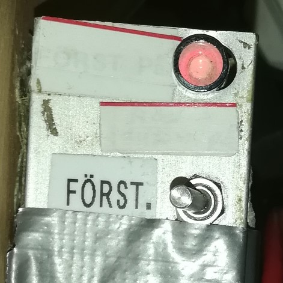
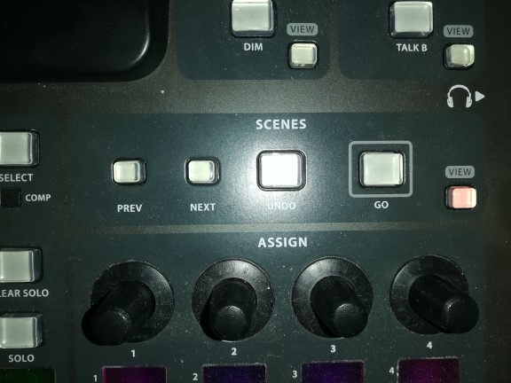
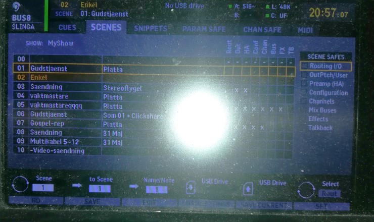
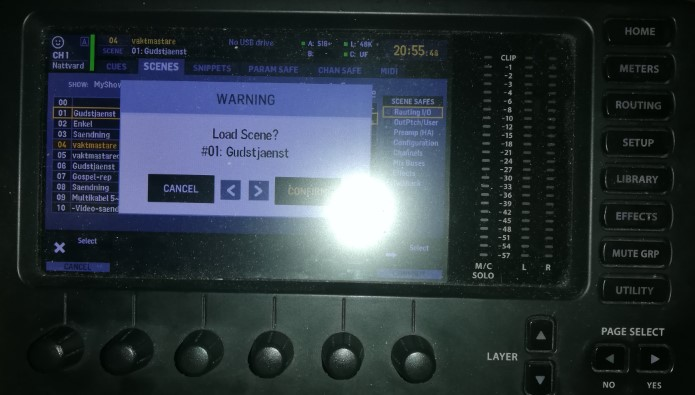
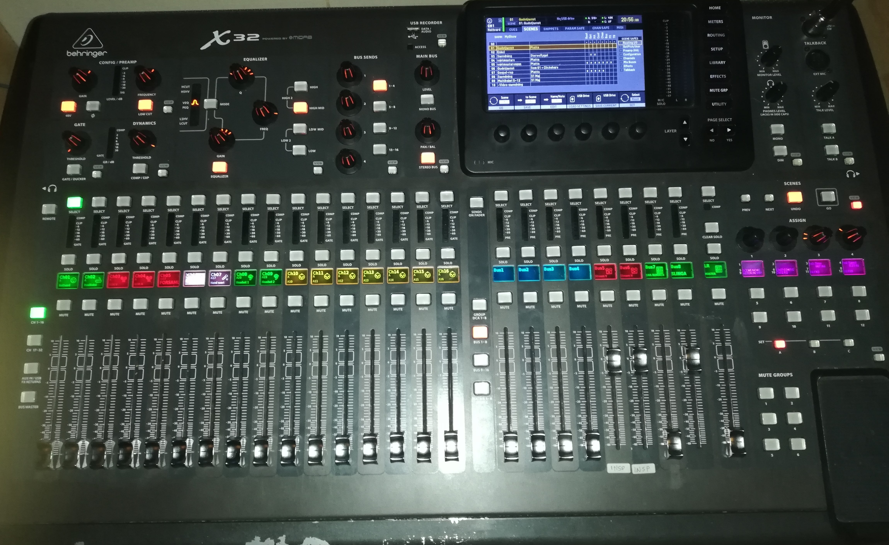

Översikt
Ljudanläggningen i kyrksalen består av några fasta mikrofoner (körmikrofoner, församlingsmikrofon, predikstolsmikrofon och nattvardsbordsmikrofon), flera mikrofoningångar som man kan koppla in lösa mikrofoner i, 4 trådlösa mikrofoner (2 handhållna och 2 headset), högtalare och ett digitalt mixerbord.
De trådlösa mottagarna står längst fram i kyrksalen under långbänken bredvid dopkällan. Mikrofonstativ och mikrofonkablar finns i förrådet bakom trädet och resten finns vid mixplats i bakre högra hörnet av kyrksalen.
Användning av trådlösa mikrofoner
De trådlösa mikrofonerna förvaras i det lilla skåpet till vänster om mixerbordspulpeten. De handhållna mikrofonerna sätts på med den lilla sjutknappen och lyser grönt när de är på. Headseten sätts på med den lilla sjutknappen mellan antennen och där mikrofonen är inkopplad i sändarpaketet, även dem lyser grönt när de är på.
De trådlösa mikrofonerna använder särskillda laddingsbara batterier som laddas i mikrofonernas mottagare. I de handhållna mikrofonerna sitter batterierna i handtaget. Man får ut dem genom att skruva loss höljet nertill och sedan ta ut batteriet med hjälp av fingerhålet. Headsetens batterier sitter i sändarpaketet och tas ut genom luckan i botten. Luckan har en spärr som först måste skjutas åt sidan, efter det kan man skjuta ut hela luckan en bit och efter det kommer luckan att fjädras upp. Headset 2 och de handhållna mikrofonernas batterier är likadana och kan laddas i vilken utav de högra mottagarna som helst. Headset 2 har ett grått något större batteri och måste laddas i sin egna mottagare till vänster. Batterierna sticks in i hålet till höger på mottagaren med kontakterna mot mottagaren och platta sidan neråt. Batterierna ska stickas in långt i mottagren till du hör ett klick. För att få ut batteriet igen trycker man snabbt på spärren så att batteriet fjädras ut och kan dras ut helt. När batteriikonen lyser grönt är batteriet fulladdat.
På mottagaren kan man också se om mottagren har kontakt med sin mikrofon (blå lampa), hur lång tid det är kvar till att batteriet är urladdat och mikrofonens ljudnivå.
Användning av trådade mikrofoner
Runt om i kyrksalen finns det mikrofonuttag som kan användas för att koppla in trådade mikrofoner, det finns dock vissa uttag som inte kan användas utan att konfigurera om i mixerbordet eller i de fysiska kopplingarna i ljudanläggningen. De uttag som alltid går att använda är de som är märkta A10-A16 och dem som det redan sitter mikrofoner i.
Kyrkans trådade mikrofoner ligger i en väska i skåpet till vänster om mixerbordspulpeten längst ner. Kabel för att koppla in mikrofonen finns i förrådet bakom trädet. Dessa kablar har olika ändar, den ena passar bara i mikrofonänden och den andra passar bara i uttaget i väggen. I förrådet bakom trädet finns också mikrofonstativ.
Sätta på ljudanläggningen
Hela ljudanläggningen styrs från mixplats. När du sätter på ljudanläggningen börjar du med att öppna kupan för mixerbodrdet. Sedan sätter du på mixerbordet med sin på och av knapp som sitter på bakpanelen långt åt höger. När mixerbordet har startat efter ca 15 sekunder kan du starta förstärkare och resterande kringutrustning med hjälp av den lilla spaken till vänster om mixerbordet märkt FÖRST. (förstärkare). Några lampor kommer att blinka till på mixerbodrdet och en röd diod kommer börja lysa vid spaken.

Stänga av ljudanläggningen
När man ska stänga av ljudanläggningen ska man börja med att stänga av förstärkare. Detta görs med spaken till vänster om mixerbodrdet märkt FÖRST. (förstärkare). Det kommer att höras ett plopp ljud och den röda dioden kommer att slockna.
Välja mixerprofiler
Kyrkans mixerbor är digitalt vilket betyder att det egentligen bara är en specialicerad dator. Precis som en vanlig
dator har olika användare med olika inställnigar har också mixerbordet olika profiler med särskillda inställningar (scenes).
För att välja profil trycker du på knappen märkt "VIEW" i området märkt "SCENES".

Då kommer scenes-menyn upp på mixerbordets skärm där man kan välja mellan många olika mixerprofiler genom att trycka på "PREV"
& "NEXT". De tre profiler som är relevanta för volontärer är 01: Gudstjaenst, 02: Enkel & 06: Som 01 + Clickshare. 01 generellt
sett abvänds under gudstjänseter och kan användas för att livesända gudstjänsten. 06 är fast att man kan få ut ljudet från
projektorn. 02 är en profil gjord för att kunna användas av vem som helst men kan inte användas för att livesända.

När den profil du vill använda är markerad med linje trycker du på knappen märkt "GO" och bekräftar med "YES".

Mixerprofil Gudstjänst

I gudstjänstprofilen finns två lager, ett för ljudet i kyrksalen och en för ljudet till sändningen. För att komma
till lagret för kyrksalen trycker du på knappen märkt "CH 1-16" till vänster på mixerbordet. Knappen under går till
lagret för sändningen. Detta lager ser nästan identiskt ut så det är viktigt att hålla koll på vilket lager man är på.
Sändningslagret brukar vanligtvis styras av bildtekniker med hjälp av surfplattan. Hur det fungerar hittar du längre ner.
Längst ner på mixerbordet finns skjutreglagen, reglarna, dessa används för att höja och sänka volymen på vardera signal.
Längst till höger är masterregeln. Den är huvudvolymen för ljudet i kyrksalen, om den är nerdragen är det tyst från högtalarna.
De 16 reglarna till vänster är ingångsreglar. De justerar volymen för den ingången som står på den lilla displayen över
den regeln. De reglar vars dispay är röd kommer inte att ge ljud i kyrksalen. Dessa är församlings- och körmikrofoner som
i princip aldrig förstärks i kyrksalen. De gulmarkerade ingångarna är ingångar som vanligtvis inte har någon mikrofon inkopplad.
De är märkta i rummet med samma betäcknig som står på displayen.
Jag kommer inte att gå igenom mixern i större detaljer här utan refererar till mixerbordets manual och till internet. Bra resurser finns längst ner på sidan.
Externa referenser
Mixerbordets manual (engelska): Behringer X32 manual
Bra youtubekanaler (engelska):
Drew Brashler
AllamHouse